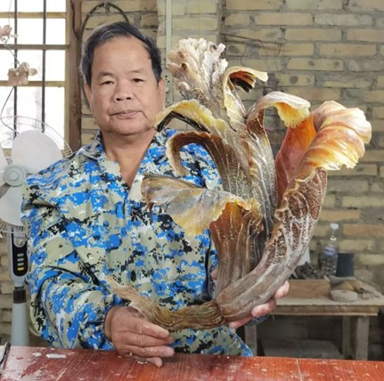
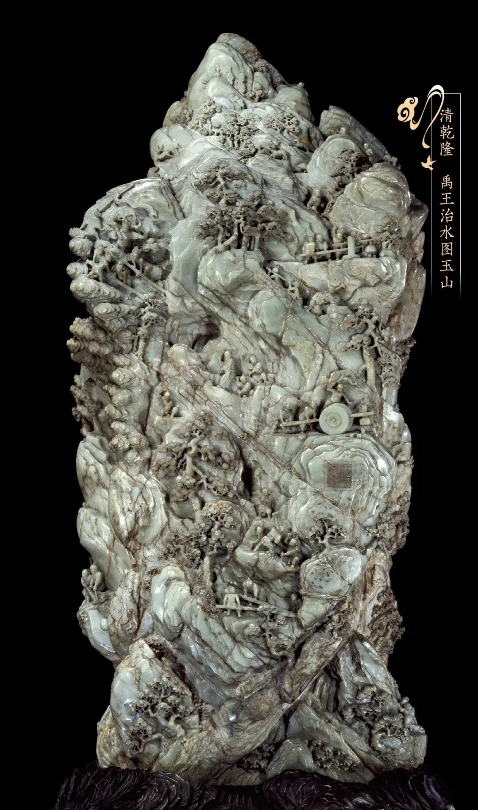

传承代表人
守护传统技艺的匠人精神
传承代表人

白耀华
第七届中国工艺美术大师
白耀华：第七届中国工艺美术大师。1974年开始从事角雕技艺，师从广西工艺美术大师曾沛贤。四十多年苦心钻研角雕技艺，在雕刻、设计一线的工作从未间断。擅长把握雕刻对象特征，创作的水族生物、花鸟草虫、飞禽走兽作品栩栩如生、传神灵动。
1974年入行至今，白耀华从事角雕技艺已有四十余年。四十多年里，白耀华苦心钻研角雕技艺，在传承的基础上不断探索新的创作模式，他把传统雕刻、镂空、浮雕、圆雕技法和现代装饰艺术融为一体，以国画的形式、双面通透的屏风格局，创作出众多雕刻艺术与装饰艺术融合的大型角雕作品，打破了长期以来角雕艺术摆件因小而散而难登大雅之堂的困境。
主要成就：
- 1988年8月，创立合浦金蝠角雕厂至今，2013年升级为合浦金蝠角雕有限责任公司。
- 2012年以来，每年创作的作品都有荣获国家级金银奖。
- 代表作《中国梦》《和鸣百财》《花好月圆》分别荣获2014、2016、2018年百花杯金奖。
- 2016年12月，获评 "中国工艺美术行业艺术大师"称号。
- 2017年11月，被评为合浦角雕项目自治区级非物质文化遗产项目代表性传承人。
- 2018年6月，获评"中国工艺美术大师"称号。
- 2020年12月，荣获"广西工匠"称号。
- 2021年8月，荣获广西五一劳动奖章。
- 2021年，他设计、白霆麒和吴兴初制作的角雕《咏春》在第56届全国工艺品交易会仿真植物及配套用品展上荣获"金凤凰"创新产品设计大赛金奖。
- 2023年5月，他设计的合浦金蝠《九州同庆》荣获2023年"百花杯"评审活动银奖。
- 2024年5月，作品《祥和九州》在第四届"百鹤杯"工艺美术设计创新大赛中荣获百鹤新锐奖。
传承培训
技艺传承
为了保护和传承合浦角雕技艺，当地政府和文化部门定期举办角雕技艺培训班，邀请大师级传承人亲自授课，传授角雕制作技艺。
人才培养
建立了角雕技艺传承基地，为有志于学习角雕艺术的年轻人提供学习和实践的机会，培养新一代角雕艺术人才。
文化交流
定期举办角雕艺术展览和文化交流活动，让更多人了解角雕艺术，促进角雕文化的传播和发展。
